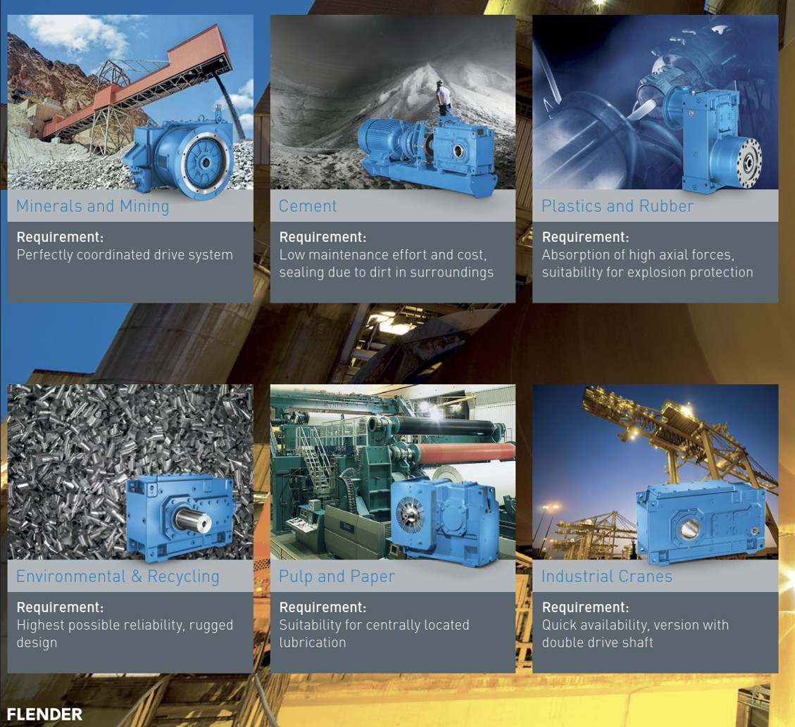

Обзор и матрица обозначений
Ознакомьтесь с конструкциями для тяжелых условий работы и модульными опциями цилиндрических редукторов FLENDER® серии H и коническо-цилиндрических редукторов серии B. Полная техническая взаимозаменяемость поддерживается WeDrive Power Transmission.
Целевые отрасли и области применения

Наши тяжелые промышленные редукторы FLENDER спроектированы специально для суровых условий эксплуатации. Эта универсальная, проверенная временем конструкция обеспечивает исключительную надежность в непрерывных технологических процессах — от высокомоментного дробления минералов до точного портового подъемного оборудования.

Приведенные выше инженерные данные описывают стандартные размеры для редукторов FLENDER. Они содержат важные контрольные параметры по подбору габаритов, охватывающие конкретные значения крутящего момента и диапазоны передаточных чисел для различных типов корпусов.
КОНСТРУКЦИИ И ТИПОРАЗМЕРЫ FLENDER - Технические спецификации
| Тип редуктора | Номинальный крутящий момент T2N (Нм) | Диапазон передаточных чисел (i) |
|---|---|---|
| Цилиндрический редуктор H1 | 3 300 - 75 700 Нм | 1.25 - 5.6 |
| Цилиндрический редуктор H2 | 3 500 - 107 000 Нм | 6.3 - 28 |
| Цилиндрический редуктор H3 | 11 600 - 109 000 Нм | 22.4 - 112 |
| Цилиндрический редуктор H4 | 21 700 - 113 000 Нм | 100 - 450 |
| Коническо-цилиндрический B2 | 6 200 - 101 000 Нм | 5 - 22.4 |
| Коническо-цилиндрический B3 | 3 600 - 113 000 Нм | 12.5 - 90 |
| Коническо-цилиндрический B4 | 11 600 - 113 000 Нм | 80 - 400 |
* Примечание: Номинальный крутящий момент и диапазоны передаточных чисел указаны для стандартных промышленных конфигураций FLENDER.

На графике ниже представлены максимальные значения крутящего момента для многоступенчатых систем зубчатых передач. Для расчета индивидуальной тепловой мощности или подбора опций принудительной смазки обращайтесь напрямую к инженерной команде WeDrive.
| Тип | Диапазон размеров | Номинальный момент T2N (Нм) | Передаточное число (i) |
|---|---|---|---|
| H1.. (Одноступенчатый) | 03 - 19 | 3 300 - 245 000 Нм | 1.25 - 5.6 |
| H2.. (Двухступенчатый) | 03 - 28 | 3 500 - 1 400 000 Нм | 6.3 - 28 |
| H3.. (Трехступенчатый) | 05 - 28 | 11 600 - 1 400 000 Нм | 22.4 - 112 |
| H4.. (Четырехступенчатый) | 07 - 28 | 21 700 - 1 400 000 Нм | 100 - 450 |
| B2.. (Двухступенчатый) | 04 - 18 | 6 200 - 230 000 Нм | 5 - 22.4 |
| B3.. (Трехступенчатый) | 03 - 28 | 3 600 - 1 400 000 Нм | 12.5 - 90 |
| B4.. (Четырехступенчатый) | 05 - 28 | 11 600 - 1 400 000 Нм | 80 - 400 |

Понимание точных параметров номенклатуры обеспечивает идеальную совместимость при замене деталей по серийным номерам или в циклах закупок для модернизации оборудования предприятий.
Структура обозначения редуктора (Пример: B3SH11A16)
- B: Коническо-цилиндрические редукторы
- 3: Количество ступеней (3 ступени)
- S: Цельный вал с призматической шпонкой
- H: Горизонтальное монтажное положение
- 11: Идентификатор типоразмера редуктора
- A: Конструктивное исполнение A
- 16: Номинальное передаточное число i = 16

Представленная выше подробная конфигурация включает специализированные соосные приводы с высоким передаточным числом. WeDrive предлагает полностью взаимозаменяемые компоненты, точно соответствующие оригинальным промышленным габаритным профилям.

Подробные пределы крутящего момента для гибких валовых муфт FLENDER. Правильная конфигурация муфты устраняет напряжения, вызванные несоосностью валов, и амортизирует жесткие ударные нагрузки в приводных соединениях.

Представленная выше структурная матрица иллюстрирует технические границы для тяжелых цельностальных дисковых муфт, обеспечивающих стабильный крутящий момент без люфта в синхронных операционных системах.

Обзор параметров гидродинамических жидкостных муфт. Идеально подходят для плавного пуска промышленных конвейеров с высокой инерцией и предотвращения внезапных поломок из-за перегрузки по крутящему моменту.
Муфты FLENDER - Обзор серий продукции
| Категория | Серия / Название модели |
|---|---|
| Торсионно-жесткие зубчатые муфты | ZAPEX ZW / ZAPEX ZN |
| Торсионно-жесткие цельностальные муфты | N-ARPEX, ARPEX |
| Гибкие муфты | N-EUPEX / RUPEX / N-BIPEX |
| Высокогибкие муфты | ELPEX-B / ELPEX-S / ELPEX |
| Гидромуфты (Жидкостные муфты) | FLUDEX |
| Безлюфтовые муфты | SIPEX / BIPEX-S |
* WeDrive предоставляет полную техническую поддержку для компонентов силовой трансмиссии FLENDER. Наш ассортимент включает как торсионно-жесткие, так и высокогибкие варианты для различных промышленных применений.